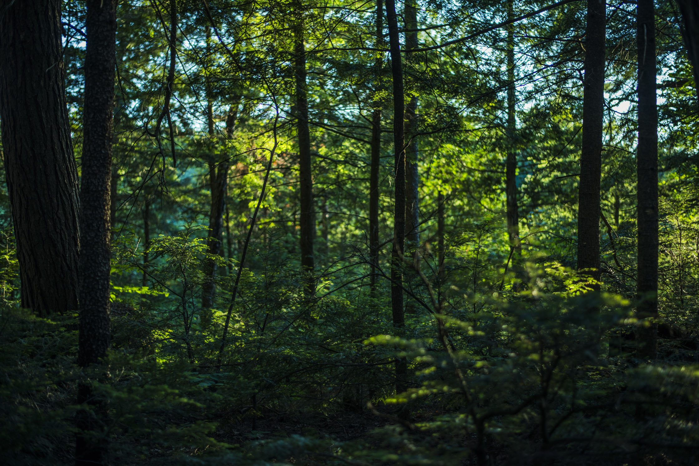
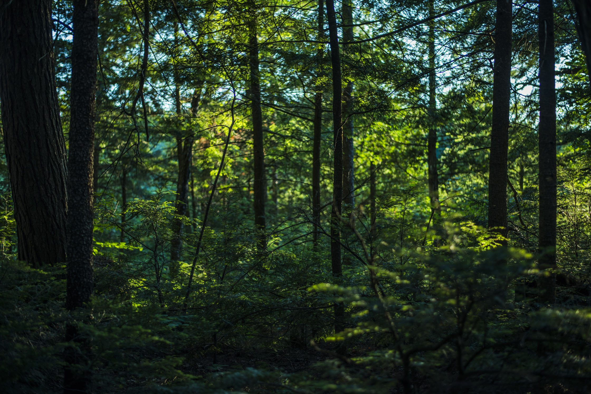

Objetivos de Desenvolvimento Sustentável (ODS)
17 Objetivos Para Transformar Nosso Mundo
17 Objetivos Para Transformar Nosso Mundo
 


-Evitar desmatamento e queimadas;
-Eliminar a venda e compra de animais silvestres, denunciando essas práticas;
-Investir em produção baseada em sustentabilidade e reflorestamento;
-Utilizar biocombustíveis e energias de fontes renováveis;
-Reduzir ou evitar o uso de agrotóxicos;
-Descartar de forma adequada embalagens de substâncias nocivas;
-Adquirir produtos biodegradáveis;
-Reutilizar ou restaurar móveis feitos de madeira;
-Criar programas de recuperação de florestas, matas e animais silvestres;
-Promover campanhas de concientização a respeito da preservação de florestas, matas e animais silvestres;
-Insvertir e apoiar projetos voltados para a preservação ambiental;
-Respeitar espaços preservados.